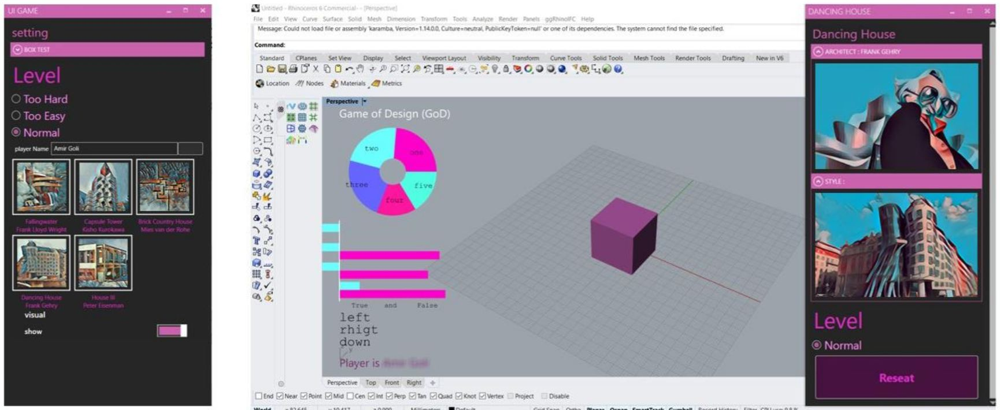
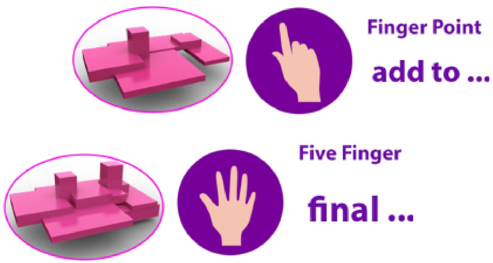

GaoDe (Game of Design): A Multimodal Architectural Design Serious Game

Summary
GaoDe is an open-ended educational serious game that lets architecture students practice design through self-assessment inside a familiar CAD workflow. Instead of keyboard/mouse-only input, it uses a multi-modal natural user interface that combines hand gestures, machine vision, and offline speech commands to support playful exploration without “right or wrong” solutions.
Result: mostly > 4.0/5 means; strong willingness to recommend
Problem and goal
In early studio education, students often learn design concepts but struggle to apply them confidently in open-ended tasks. GaoDe reframes practice as a playful, low-risk environment: learners explore alternatives, receive feedback, and steer their own progress through self-assessment rather than external grading.
The goal is to strengthen the hands–eyes–mind loop central to design thinking, while staying embedded inside the CAD ecosystem students already use.
System architecture
Leap Motion (gesture recognition)
3D hand/finger tracking mapped to modeling actions and camera control
Example pattern: clench one hand; move the other around it to navigate
Webcam + CNN (finger-count recognition)
Simple, high-confidence actions using number of visible fingers
Example mapping: one finger = save; five fingers = finish
Offline speech (keyword spotting)
Short commands (e.g., “yes”, “up/down/left/right”, “stop”)
Intentionally gated (e.g., a yellow marker) to reduce accidental triggers
Gesture-based camera control (Leap Motion).

Finger-count actions (webcam + CNN): save / finish.Offline voice commands with color-gated activation.
Five game modes
The initial GaoDe prototype includes five games based on iconic buildings. Each mode targets a different aspect of design perception and uses distinct interaction rules to sustain motivation and avoid repetition.
1) Brick Country House (Mies van der Rohe)
Volumetric ordering and spatial partitioning using guided walls and block placement.